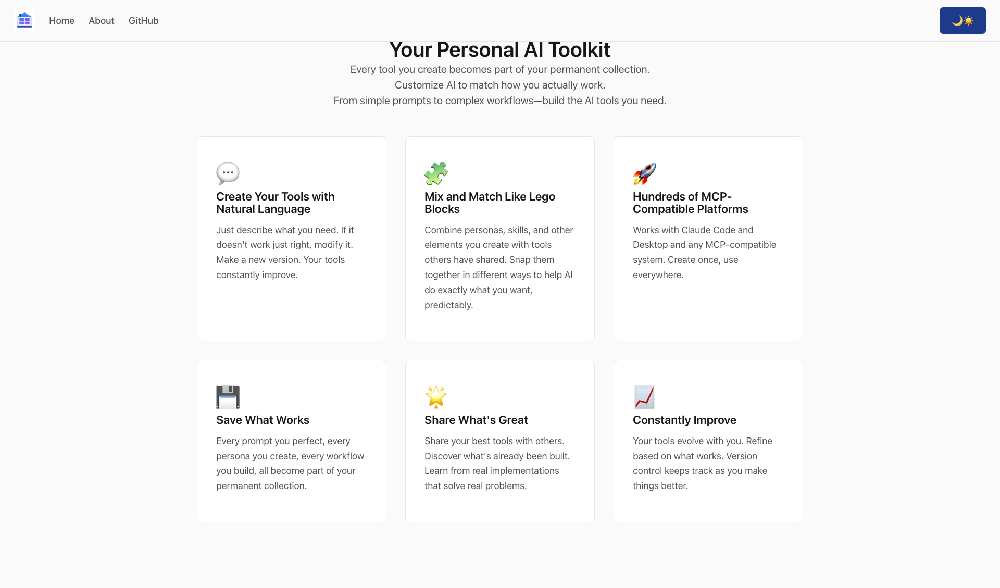

DollhouseMCP
DollhouseMCP is the core platform project: an open source MCP server for composable AI behavior.
It turns prompts into reusable, auditable building blocks you can read, edit, version, activate, and combine.

Quick Install
npm install @dollhousemcp/mcp-server
npx @dollhousemcp/mcp-server@latest
If npm is not installed yet, install Node.js first.
By default, DollhouseMCP starts in MCP-AQL mode with CRUDE endpoints. You do not need to manually configure that for normal use.
Current Public Status
- Latest documented beta:
v2.0.0-beta.3(February 3, 2026) - Primary interface path: MCP-AQL (
CRUDEorsingleendpoint mode) - License: AGPL-3.0
Element Model (What You Actually Work With)
DollhouseMCP currently supports six core element types.
| Type | What It Does | Real Example |
|---|---|---|
| Personas | Voice, behavior, and approach overlays | creative-writer, technical-analyst |
| Skills | Task-focused capability modules | code-review, threat-modeling |
| Templates | Structured output formats | research-report, code-documentation |
| Agents | Goal-driven runtime executors | code-reviewer, task-manager |
| Memories | Persistent context entries | project-context |
| Ensembles | Coordinated multi-element packs | development-team, security-analysis-team |
Elements, Ensembles, and Stacks
- Element: one reusable unit (persona, skill, template, agent, memory, or ensemble)
- Ensemble: one element type that coordinates multiple elements together
- Stack: a practical product grouping built from multiple elements and ensembles across a full workflow
Portfolio elements (personas, skills, templates, agents, memories)
-> Session activation
-> Ensemble coordination (for example: development-team)
-> Execution lifecycle (execute_agent -> record_execution_step -> complete_execution)
-> Stack outcome (end-to-end app behavior)
-> External integrations (Bridge, APIs, production workflows)
A concrete stack example is Elemental Surveys (currently early/private development), which composes research personas, survey skills, templates, memories, agents, and ensembles into an end-to-end survey pipeline.
Safety and Operational Controls
DollhouseMCP has explicit safety layers for runtime operations:
- Gatekeeper: operation and endpoint checks, including approval flows
- CLI permission approvals: pending approval queue + explicit user decision
- Danger Zone controls: elevated verification for high-risk actions
- Execution-state telemetry: step-level progress and autonomy signals
Example approval pattern:
{ "operation": "confirm_operation", "params": { "operation": "execute_agent" } }
{ "operation": "approve_cli_permission", "params": { "request_id": "req-123", "decision": "allow" } }
What the 2.0.0 Refactor Unlocked
The 2.0.0 refactor moved the platform from an early architecture to a cleaner production path:
- clearer internal service boundaries
- better caching and runtime performance
- stronger diagnostics, logging, and metrics
- safer execution and approval-aware runtime controls
- cleaner path from local workflows toward hosted services
Why It Matters
DollhouseMCP is the foundation for the rest of the portfolio:
- MCP-AQL provides the protocol and query surface
- Bridge extends workflows into external communication systems
- Collection distributes reusable community elements
- AILIS provides architecture language for system-level reasoning